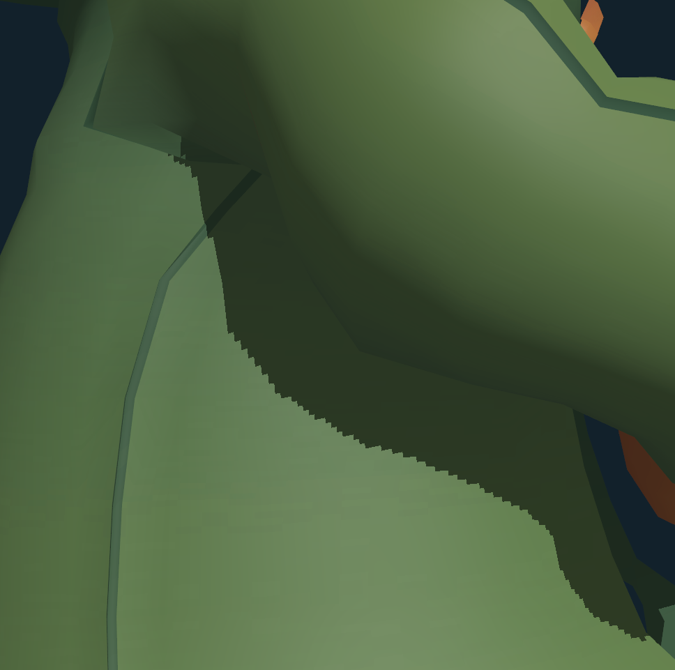
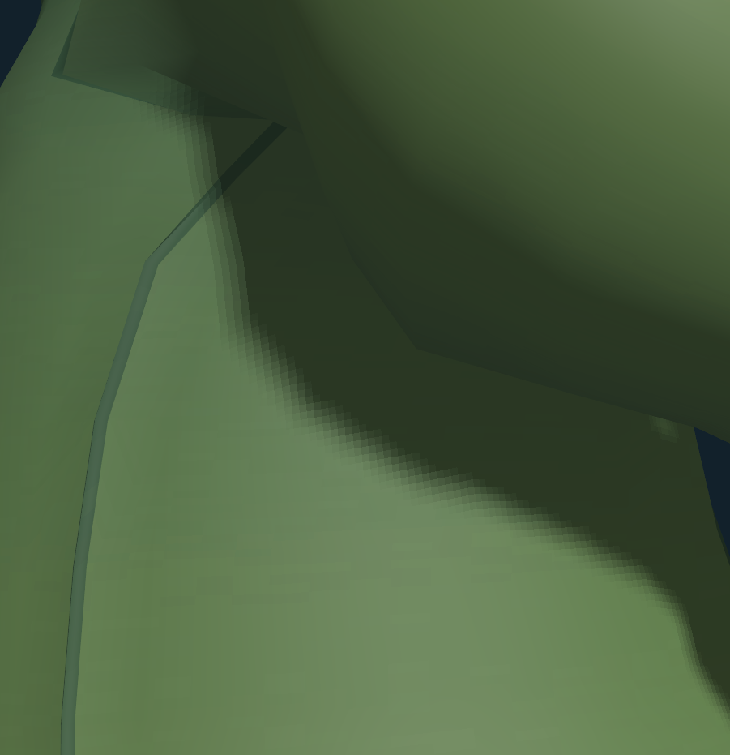
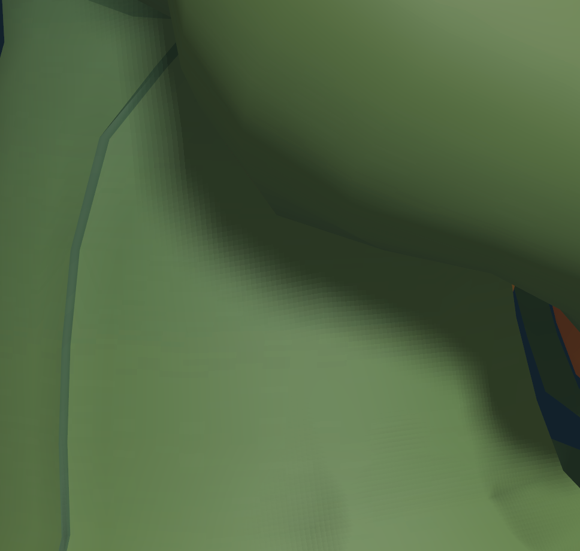

- Generated by
 1.9.5
1.9.5
|
Computer Graphics Project
Softening Shadows using PCF
|
The topic for the project is softening shadows and removing artifacts using Percentage Closer Filtering (PCF) .
We used this research paper where the authors present a solution to aliasing problem for shadow algorithms that uses depth maps.
https://graphics.pixar.com/library/ShadowMaps/paper.pdf
We will be using Directional Lights as our main source of lightings in the scene and have a Crow model placed for our test subject.
We are using Depth Maps for implementing Shadow Maps in the scene. ShadowMap Program generates a Depth Map from light's perspective and sends it to the camera for the models to cast shadows using Shader Program.
Here, we should see a Hardline Shadow formed by the parts of models to itself like the hat to its face, beak to its clothes and many more.
By implementing PCF, we apply a Kernel of some radius to average out the shadow value across the edge of the shadows and blending the edge.
We see a good result of soft shadows for radius of 3 and above but we notice significant performance issues for radius near 8 and above due to it's computation needs.
ROHIT ARYAN 2020AAPS0293H RUSHIL SHRIVASTAVA 2020AAPS1408H GAUTHAM GUTTA 2020AAPS2204H SAMARPIT S ROUT 2020AAPS1332H
Results for Sample Radius = 0, Sample Radius = 2 and Sample Radius = 5 respectively
  